Airoscript
Es la utilidad mas completa para auditar redes inalámbricas, aunque también la mas compleja de todas, nos permite sacar claves comparando las datas capturadas con diccionarios, cosa que las otras utilidades que hemos visto no nos permiten, trae utilidades para crear diccionarios para ciertos MODEM, por lo que nos bastan 5 datas para sacar la clave de una red, en la que su nombre y su clave la asigne automáticamente el MODEM, al iniciar Airoscript nos encontramos una pantalla en la que se nos informa, que el programa se ha diseñado para formación educativa, para auditoria de redes. Y seguidamente nos aparece otra pantalla, pidiéndonos que seleccionemos nuestra tarjeta, para ponerla en modo monitor y después nos aparecerá en la pantalla una ventana como la de la segunda imagen donde se nos pide que configuremos la pantalla, en mi caso he seleccionado la opción 1) 640x480.
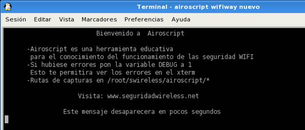 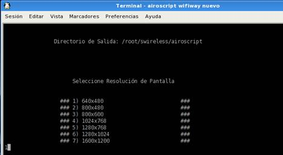
Seguidamente tendremos que seleccionar otra vez nuestro adaptador ya funcionando en modo monitor, como se muestra en la imagen, en mi caso a sido la 3) wlan0. Y nos
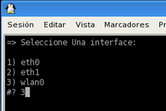
aparece la próxima pantalla en la que se nos informa de nuestro adaptador y de nuestra mac, además nos aparecen una serie de opciones con su explicación a su derecha, iremos utilizando algunas pero empezaremos por la 1 para empezar a escanear las redes de nuestro entorno, una vez seleccionada la opción 1 nos pedirá que seleccionemos el modo de búsqueda, como nuestra red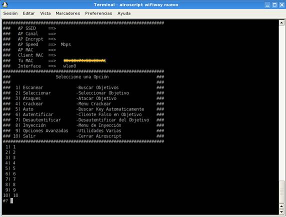
esta encriptada con clave WEP seleccionamos el numero 3, aunque si cogemos la opción 1 también nos saldría, ya que con esta opción salen todas las redes a nuestro alcance, pero si tenemos muchas redes a nuestro alrededor, podría darse la circunstancia que no quepan en la pantalla todas, de seguido nos pedirá que canal queremos escanear si sabemos nuestro canal ponemos el 2 sino ponemos el 1 y nos salen todos, 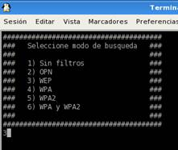 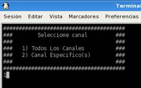
En la siguiente imagen se ven las redes a nuestro alcance, y en la parte inferior podemos apreciar que una tiene un cliente asociado, esta es mi red, esta detectando el otro ordenador que tengo encendido, y conectado a Internet, hecho esto ya podemos cerrar esta pantalla, y vemos una similar a la anterior, pero ya nos aparecen todos los datos tanto de nuestro MODEM, como de nuestro adaptador, ahora elegimos la opción 2 para seleccionar nuestra red.
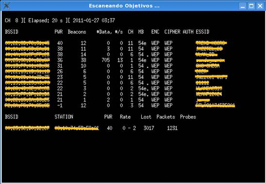 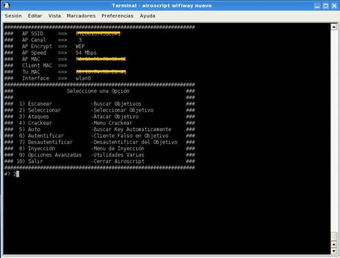
Y aparece la siguiente imagen donde debemos poner el numero de nuestra red, en mi caso el numero 11 y posteriormente se nos pide si queremos seleccionar un cliente, como tenemos uno que es mi otro ordenador le digo que si, y nos aparece otra pantalla pidiéndonos que seleccionemos el numero de cliente ya que podría darse la posibilidad de que haya varios conectados a una misma red en este caso tecleamos el 1
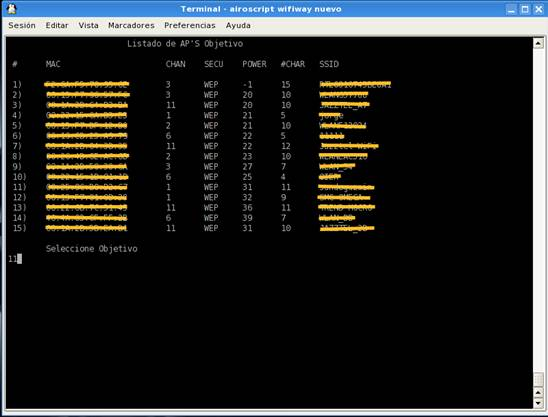 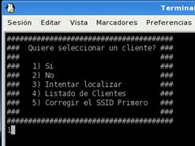 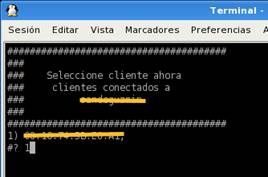
Y otra vez nos vuelve a salir el menú principal donde ahora debemos elegir el tipo de ataque que vamos a realizar para capturar las datas, que nos permitan sacar la clave, para lo cual debemos seleccionar en esta ocasión el numero 3 y nos pasara a la siguiente pantalla, como tenemos un cliente asociado elegimos un ataque entre el 7 y el 11 yo he cogido el 7 y nos pasa ya a la pantalla de capturas.
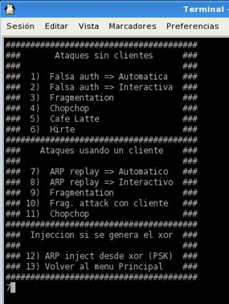
En esta pantalla podemos ver que se han conseguido en tan solo 16 segundos 2.577 datas y que estamos inyectando a un ritmo de 140 datas por segundo, al cabo de 1 minuto ya disponemos de 11.469 datas por lo que ponemos en marcha el aircrack-ng para que nos vaya buscando la clave le tenemos que decir que nos busque en la carpeta de airoscript, posteriormente nos sale un listado de todas las redes que detectamos a nuestro alrededor entonces seleccionamos la nuestra y empieza a buscar la clave.
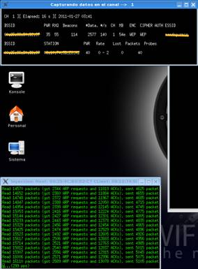 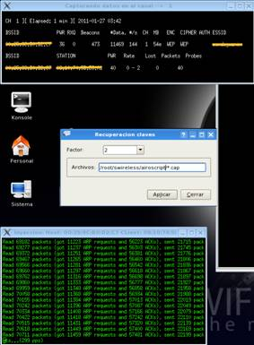 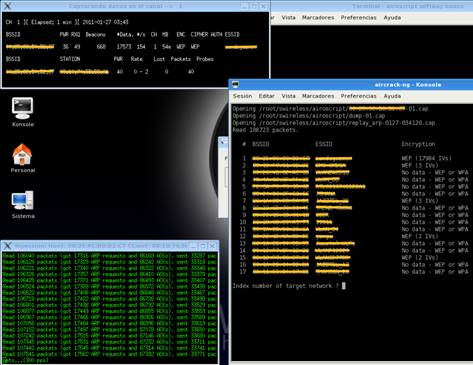
Mientras va buscando la clave sigue el airoscript recogiendo datas como se ve en la siguiente figura y en 2 minutos lleva recogidas 23.156 y reinyectando a 166 datas por segundo lo que quiere decir que no tardaremos en dar con la clave, y efectivamente cuando tenemos 31.711 datas y tras 53 segundos de funcionamiento el aircrack-ng nos da la clave en hexadecimal.
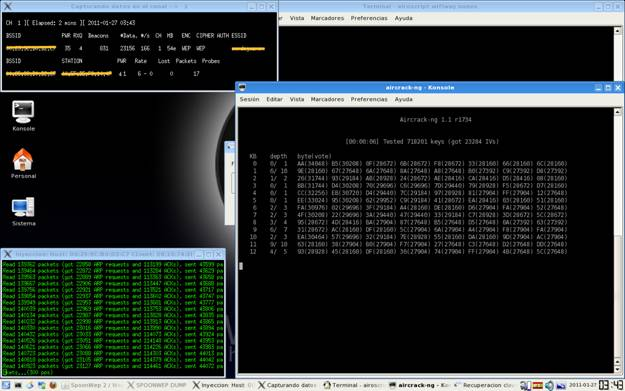 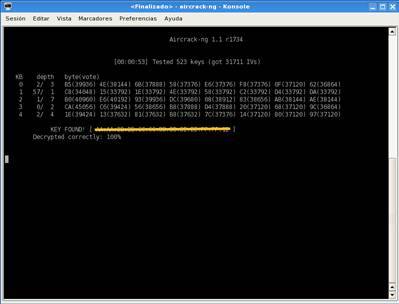
Si la queremos ver la clave también en ASCII, paramos todo y cuando nos salga de nuevo el menú principal, seleccionamos el numero 4 crackear y nos sale el siguiente menú, seleccionamos el numero 1.
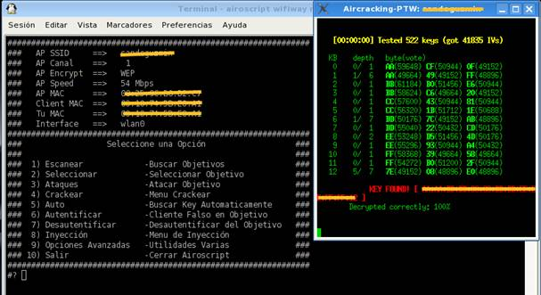
En el caso de que nuestra red seria de alguno de los otros formatos, solo habríamos necesitado 5 datas para sacar la clave, como ya explicamos en el caso de claves por defecto.Ahora nos sale otro menú en el que vamos a elegir la primera opción ya que es la mas rápida, en el caso de que no encontrase la clave pasaría automáticamente a buscarla en la opción 2. Pero como vemos en la siguiente imagen la encuentra casi instantáneamente en la primera opción.
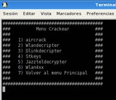 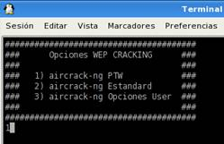